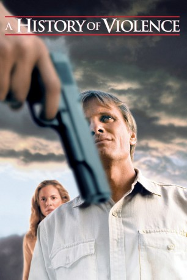

#1880 A History of Violence
Auszeichnungen: für 2 Oscars nominiert
 
 IMDB-Wertung: 7.5 / 10
IMDB-Wertung: 7.5 / 10  Metascore: 81
Metascore: 81 
Tom Stall, seine Frau Edie und seine zwei Kinder leben ein normales Leben in ihrem Kleinstadthaus in Millbrock, Indiana. Eines Tages jedoch wird die Familie auf eine harte Belastungsprobe gestellt.Alles beginnt mit zwei Männern, die in den Coffeeshop von Tom kommen und den Laden überfallen wollen. Damit keine unschuldige Person verletzt wird, erschießt Tom die beiden in Notwehr und wird durch diese Tat zu einem Helden in der Stadt. Auch die Presse feiert ihn, was er selbst aber eigentlich nicht möchte, sondern lieber, dass alle ihn sein geregeltes Leben weiterführen lassen. Als sich die Schlagzeilen wieder etwas legen, steht der undurchschaubare Carl Fogarty vor seiner Tür. Carl macht ihm unmissverständlich klar, dass seine letzte Stunde geschlagen hat, da er schon lange mit einem gewissen "Joey", für den er ihn hält, abrechnen will. Tom setzt nun alles daran, Carl davon zu überzeugen, dass er nicht Joey ist...
Jahr: 2005
Dauer: 96 Minuten
FSK: 18
Land: USA Studio: New Line CinemaTonspuren: DD5.1 - ,
Untertitel:
Auflösung: 1080p (1912x1032) Größe: 4904 MB
Genre: Thriller, Drama, Krimi
Regisseur:  David Cronenberg
David Cronenberg
Drehbuch: John Wagner, Vince Locke, Josh Olson
Soundtrack: Howard Shore
Darsteller:
 Viggo Mortensen als Tom Stall
Viggo Mortensen als Tom Stall Maria Bello als Edie Stall
Maria Bello als Edie Stall Ed Harris als Carl Fogarty
Ed Harris als Carl Fogarty William Hurt als Richie Cusack
William Hurt als Richie Cusack Ashton Holmes als Jack Stall
Ashton Holmes als Jack Stall Peter MacNeill als Sheriff Sam Carney
Peter MacNeill als Sheriff Sam Carney Stephen McHattie als Leland
Stephen McHattie als Leland Greg Bryk als Billy
Greg Bryk als Billy- Kyle Schmid als Bobby Singer
- Sumela Kay als Judy Danvers
- Heidi Hayes als Sarah Stall
 Aidan Devine als Charlie Roarke
Aidan Devine als Charlie Roarke Ian Matthews als Ruben
Ian Matthews als Ruben Morgan Kelly als Bobby's Buddy
Morgan Kelly als Bobby's Buddy- Jason Barbeck als Richie's Thug
- Neven Pajkic als Richie's Thug
- April Mullen als Kid in Diner
- Steve Arbuckle als Jared , uncredited
 Connor Price als Kid , uncredited
Connor Price als Kid , uncredited- Gerry Quigley als Mick
- Deborah Drakeford als Charlotte
- Bill MacDonald als Frank Mulligan
- Michelle McCree als Jenny Wyeth
- R.D. Reid als Pat
- Martha Reilly als Shoe Saleswoman
- Bruce Beaton als Richie's Thug
- Brendan Connor als Local TV Reporter
- Nick Antonacci als Local TV Reporter
- John Watson als Baseball Coach
- Don Allison als TV Broadcaster
- Brittany Payer als Motel Girl
- Mitch Boughs als Kid in Diner
- George King als Hospital Well-Wisher
- Shawn Campbell als Orderly
- Evan Rose als 'Hulk' Boy , uncredited
- Michael Stevens als Guy on the Street , uncredited
Datei: X:\FSK18-2000-2009\History of Violence, A (2005, FSK18, 1912x1032).mkv seit 30.08.2015
Festplatte: FSK18
 Es gibt insgesamt 106 Filme in der Gruppe 'FSK18-2000-2009'
Es gibt insgesamt 106 Filme in der Gruppe 'FSK18-2000-2009'